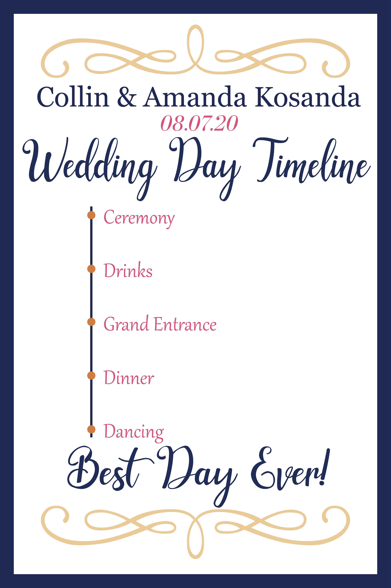
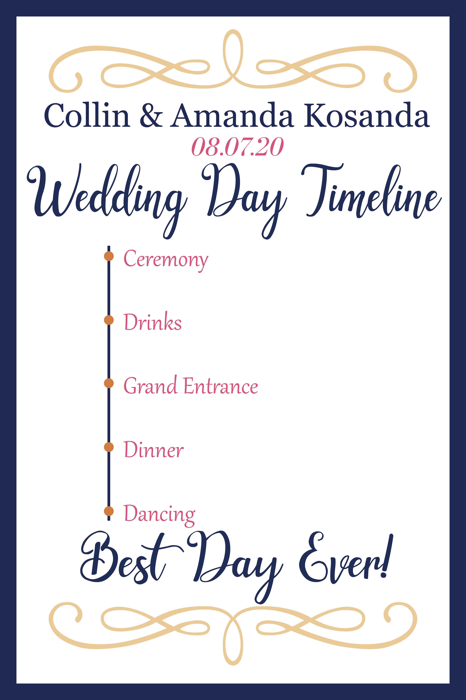

About me
Hi, my name is Patrick!
Recent graduate with a bachelor’s degree in Computer Science from Bradley University.
I love front-end and web development, making things that are visually interesting and useful.
Checkout some of my coding and graphic design projects below!
I am a very intellectually curious person and love to learn new things about science, technology, engineering, and much more.
In my free time I like to wood work, watch movies, play video games, and read.
If you have any questions or want to reach out, you can do so at
Coding Projects

Music Party
Languages Used:
Project Description:
This is a web application built using django and the django rest framework for the backend and react for the front end. This site is responsive and can be connected to from a mobile device. The idea behind this project was to allow guests of a party to control the hosts spotify account though this site allowing them to play/pause the music or skip the curent song. These controls are done using the Spotify API.
Challenges:
This was the first time I communicated with an API. Working through the documentation and figuring out how to recieve information and sending function requests took a little bit of time to understand and implement.
Lessons Learned:
Make a mockup for different views of all the pages. This helped me plan how to style elements and plan ahead.

Movie Surprise
Languages Used:
This is a movie recomendation website built using Django. The goal of this site was to add a new rating for
movies that would allow for better surprise movie recomendations. This project was a group senior capstone in which I was the
full stack developer.
We had trouble connecting the external database and the site. Both parties had dependencies on their machines that wouldn't allow them
to communicate. We decided to put everything on a final host machine with no dependencies and got them to work together.
Knowing how to deploy a site from the beginning helps in the long run.
Planning use cases, pages, and how algorithms will work in the planning phase really makes the construction phase much easier.
Project Description:
Challenges:
Lessons Learned:

Read It
Languages Used:
Project Description:
“Tinder for books”. This is a web app created using Django, that presents people with a selection of books. You can like a book and save it to your profile. Every book has links to read or purchase. Collected data on thousands of books by building a web scraping algorithm that scraped goodreads.com, Google, Amazon, Barnes and Noble, and Audible. Users can take a quiz that changes what genre of books are being seen.
Challenges:
Saving liked books to a users profile was a challenge for a while. I had to learn
more about the models Django used, and eventually decided to use a many to many relationship
model to store a users liked books.
Another challenge was figuring out how to present 12 genres in different percentages to the user, so
that they aren't given just one genre. I solved this by taking their "genre score" from their
profile and using those numbers to determine the percentages of the genres I should be showing.
Lessons Learned:
When you can, use built in models or classes to save time, so you are not reinventing the wheel. Built in things work well and can be implemented however you need to.

Sorting Visualizer
Languages Used:
Project Description:
This is a Sorting Algorithm Visualizer, that visualizes six different sorting algorithms. Those being: Bubble, Heap, Selection, Insertion, Quick, and Merge. I built this using React.
Challenges:
One challenge I had was figuring out how to visually move the bars while still implementing the algorithms properly. The way I decided to do this was to write the algorithms in JavaScript as normal and add the changes to an "animation" list. Then that list would get read and visualized. Each entry in the animation list included the position, color, and height the bar should be.
Another issue was visualizing all the algorithms at the same time. When displaying all six graphs they are not individual graphs, but one graph. To solve this I split up the large graph into six smaller graphs and sent those into the sorting algorithms. After receiving the animation lists from those I then made one large animation list that would perform one animation per graph at a time.
Lessons Learned:
There is always a way to solve the problem if you take a step back and be creative with the solution. I learned this from visualizing all six at the same time.

Snake JavaScript
Language Used: JavaScript, HTML, CSS
Project Description:
This is a recreation of the class game "Snake" using vanilla JavaScript and HTML/CSS. Every so often a special blue food will appear that will count as two foods. The player can select whatever color they want for the snake to be.
Challenges:
Overall this was a relatively easy project. The only thing that took me a second to figure out was how to change the color of the snake when the player selects a color. To do this I used radio buttons and when the player was ready to start the game it looked to see which radio button was selected, and used that value.
Lessons Learned:
Planning how you want something to look and function ahead of time saves a lot of time and confusion down the road.

Pathfinding Visualizer
Languages Used:
This is a pathfinding visualizer for Dijkstra's, Breadth-first Search,
and A-star Algorithms. This project was completed using Python and Pygame.
Applying the algorithms in a visual way was a challenge. For us it is easy to
see which squares are connected (nodes), so I had to implement a finding available
neighbors method for every node.
Making a diagram or drawing the problem out on a whiteboard will
help you to problem solve before actually writing the code. It will
allow you to work through the problem logically before coding it.
Project Description:
Challenges:
Lessons Learned:

Minecraft MySQL Database
Languages Used: SQL
Project Description:
As a course project I created a database for Minecraft. This included various blocks, items, tools, and enchantments that all have relations with each other. This is just a sampling of the games content as a proof of concept. Not everything from the game is included and some of the values for enchanting are not exact.

Enigma
Languages Used: Python
Project Description:
This is a recreation of the German Encryption machine from The Second World War. I had already built this in Java only using the command line for input, but as I was learning about User Interfaces I decided to make it again in python. I used PyQt5 for this project.
Challenges:
Having both manual encryptions, letter by letter, and automatic was a challenge at first. For the first part, they operate differently. One letter versus many. I looped through each letter and then combined the encrypted output again. This saved me many lines of code that I would've used had I written two different but identical programs.
Lessons Learned:
I had built this in command line my freshman year of college using Java. I learned that just because I had done that and knew the solution for that case, didn't mean it would translate to this new language and using a GUI. I went back to the basics of drawing out how the device worked and built up the python from there.
Design Projects

Brand Summit Meeting
I was asked to design signage and handouts for a branding meeting attended by
Maytag, Whirlpool, KitchenAid, and Amana. The theme for this meeting was:
For this project I focused on consulting with the client and drafting the ideas before developing
any concept fully. This way I as able to know exactly what the client wanted and the intentions behind each decision.


Accounting Firm Advertisements
An accounting firm first reached out to me to make an advertisement
to be placed in the Crains Business magazine congratulating two of
their partners being named "The most Influential Women in Accounting".
Making their pictures hexagon shaped to mirror their logo was a detail they appreciated.
I was contacted again to make a full page black and white advertisement
celebrating their 85th year of operations. The clients and I discussed font and text
placement so nothing would clash with the background.


Wedding Signage
Having a wedding during a pandemic is difficult. From wearing masks, to socially
distancing, to a lower capacity at the church and reception. I worked with the bride
to ensure that that there was proper signage for the church and reception
so that everyone was following policies while still feeling like the wedding
she always wanted. The client had given me a pallet and some general ideas
on what the designs should be, other than that I had free reign.
This project taught me to focus more on the concept, idea, and feeling of
a design and figure out how to translate that to the current situation.


 



American Legion Annual Ball
I was asked to create RSVP cards and dinner schedules for my local post of the American Legion for their Centennial Military Ball. The outlines and stars resemble metal to feel more upscale. I added the stars from the American flag to fit the theming of the event. I also left a space for the address stickers and return labels. The times are in military time to fit the theme and most of the guests are veterans and have used it extensively.


Student Senate Posters
My friends asked if I could design a flyer for them for their upcoming school senate elections. In talking with them they liked the older style Kennedy and Nixon campaign posters. I paired that style with their school colors (Loyola and Purdue University).

Fraternity Shirts
During my time in my fraternity I have designed a few different shirts for our formal recruitment period. These take from different eras and styles. Some are fun and some are more formal while still representing the kind and fun nature of my chapter.


Work Experience
IT Intern - CDW
- Collaborated on the creation of an internal success-sharing platform, which improved staff morale and communication.
- Deployed more than 1,000 devices for customers, coworkers, and U.S. 2020 Census personnel.
Development Intern - GlidePath Power
- Managed migration of company storage systems to Microsoft SharePoint, providing easy access to valuable information on more than 20 active projects.
- Automated back-end processes, using Microsoft Power Automate, that eased project development.
Engineering Intern - Toyoda America
- Developed comprehensive user manuals for customers as well as to be used in sales talks.
- Completed all tasks, including de-cluttering and simplifying hundreds of machine blueprints.
Languages/Technologies

Python

JavaScript

HTML

CSS

Django

React

Github

Photoshop

Illustrator

Microsoft Office
Education
Bradley University
B.S. Computer Science
Noteworthy Courses:
- Software Development; Developed a proposal for a University Library system using methodologies from the Software Development Lifecycle (SDLC), receiving a final grade of 115%.
- Database Management; Created multi-table relational MySQL database for Minecraft entities including tables on blocks, items, enchantments, and tools.
- Data Science; Using Jupyter Notebook, created a number of machine learning algorithms from scratch, including K-Nearest Neighbor and Naive Bayes, testing on multi-dimensional datasets with over 60,000 entries.
Certifications
- Google Project Management
- Lean Six Sigma
- Microsoft Office Specialist